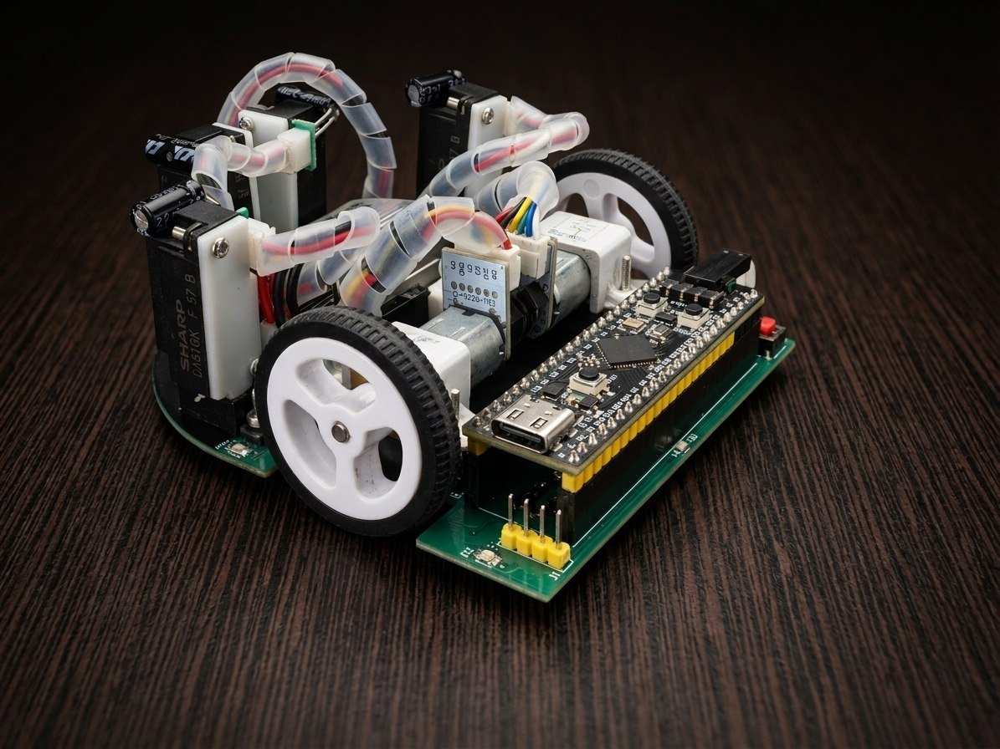

Micromouse Autonomous Maze Solver
A micromouse built to explore, map and solve a 16×16 maze at speed, competing nationally.

Overview
Micromouse competitions reward the intersection of speed and certainty: a robot has to map an unknown 16×16 maze in real time, then commit to the fastest verified route through it. This project tackles both halves of that problem, exploration and optimal-path execution, on a custom STM32-based mouse.
Real-time maze mapping runs alongside a flood-fill algorithm that recomputes the shortest known path to the goal as new walls are discovered. Once the maze is sufficiently mapped, the mouse switches to a speed run using motion-profiled trajectories.
Getting the mouse to actually hit those trajectories required PID control tuned with both feedback and feedforward terms, with the control loop parameters first modeled and validated in MATLAB before being deployed to hardware. This was critical for a robot where a few degrees of heading error compounds fast in a tight maze.
Key Features
- 01Real-time maze mapping during exploration runs, updated wall-by-wall as the mouse moves
- 02Flood-fill algorithm for continuously recomputing the shortest verified path to the goal
- 03Motion profiling for smooth acceleration/deceleration through straights and turns
- 04PID motor control with feedback and feedforward terms tuned via MATLAB system modeling
- 05Custom-designed control PCB ("BLAZE v2.0") integrating the STM32, motor drivers and sensor interfacing on a maze-scale footprint
- 06Selected among the Top 10 teams at Micromaze 2.0, IIT
Runs
 YouTube
YouTube
Search Run Demo
 YouTube
YouTube
Fast Run Demo
Older Micromice
Blaze v2 (above) is the current mouse. Before it came four earlier builds. Full write-ups for all of them live in the micromouse-showcase repo.